Code
## Read data. Change the path as necessary.
## Example: bond.data <- read.csv("wire-bond.csv")
bond.data <- read.csv("wire-bond.csv")
## This will now be automatically rendered as a paged table
bond.dataNote: You must change the file paths in the read.csv() functions below to match the location of the files on your computer (for example C:\\Users\\<YourUsername>\\Documents on Windows).
## Read data. Change the path as necessary.
## Example: bond.data <- read.csv("wire-bond.csv")
bond.data <- read.csv("wire-bond.csv")
## This will now be automatically rendered as a paged table
bond.data2D Visualization
par(mfrow = c(1, 3), mar = c(5, 4, 2, 1))
## 1) length vs strength
i1 <- which(!is.na(bond.data$length) & !is.na(bond.data$strength))
plot(bond.data$length[i1], bond.data$strength[i1],
xlab = "Wire Length", ylab = "Pull strength", pch = 19)
text(bond.data$length[i1], bond.data$strength[i1],
labels = i1, pos = 1, offset = 0.4, cex = 0.75)
## 2) height vs strength
i2 <- which(!is.na(bond.data$height) & !is.na(bond.data$strength))
plot(bond.data$height[i2], bond.data$strength[i2],
xlab = "Die height", ylab = "Pull strength", pch = 19)
text(bond.data$height[i2], bond.data$strength[i2],
labels = i2, pos = 1, offset = 0.4, cex = 0.75)
## 3) height vs length
i3 <- which(!is.na(bond.data$height) & !is.na(bond.data$length))
plot(bond.data$height[i3], bond.data$length[i3],
xlab = "Die height", ylab = "Length", pch = 19)
text(bond.data$height[i3], bond.data$length[i3],
labels = i3, pos = 1, offset = 0.4, cex = 0.75)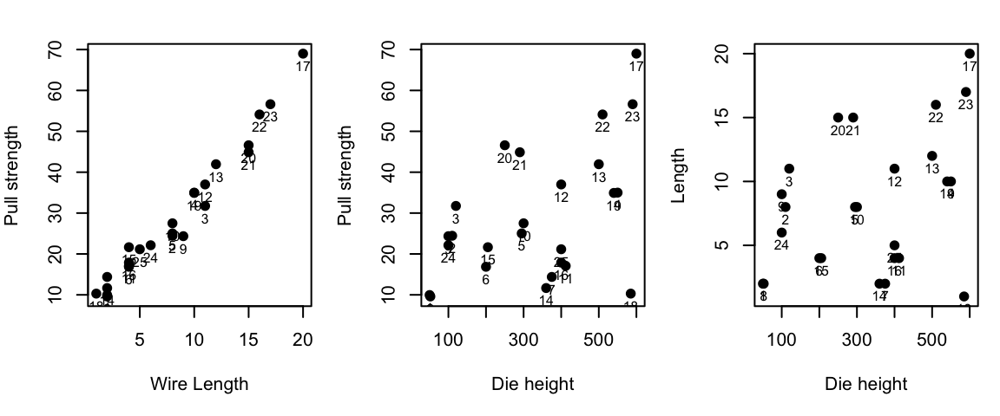
3D Visualize
library(scatterplot3d)
par(mfrow = c(1,1))
s3d <- with(bond.data, scatterplot3d(
x = length,
y = height,
z = strength,
pch = 19,
color = "steelblue",
main = "3D Scatterplot: Strength vs. Length and Height",
xlab = "Length",
ylab = "Height",
zlab = "Strength",
angle = 60
))
fit <- lm(strength ~ length + height, data = bond.data)
s3d$plane3d(fit, lty.box = "solid")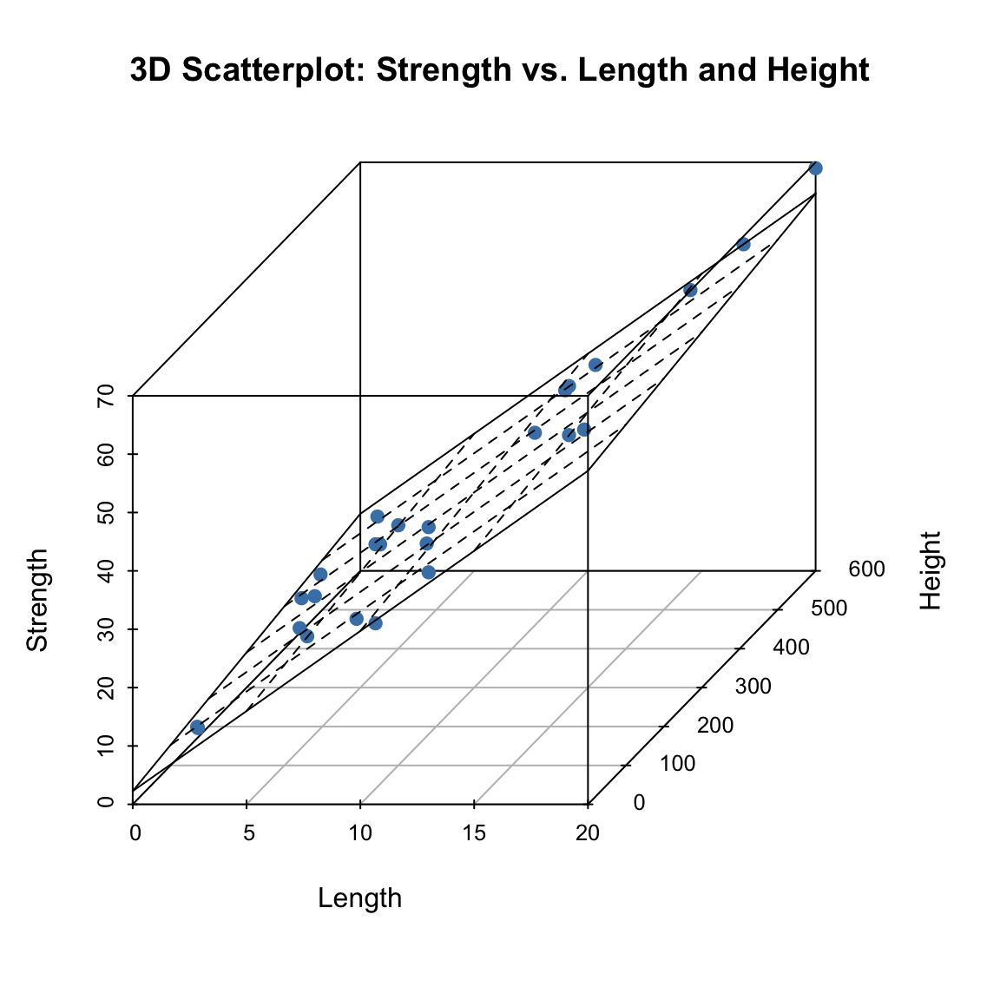
We fit a multiple linear regression model with strength as the response variable and length and height as predictors.
fit <- lm(strength ~ length + height, data = bond.data)
summary(fit)
Call:
lm(formula = strength ~ length + height, data = bond.data)
Residuals:
Min 1Q Median 3Q Max
-3.865 -1.542 -0.362 1.196 5.841
Coefficients:
Estimate Std. Error t value Pr(>|t|)
(Intercept) 2.263791 1.060066 2.136 0.044099 *
length 2.744270 0.093524 29.343 < 2e-16 ***
height 0.012528 0.002798 4.477 0.000188 ***
---
Signif. codes: 0 '***' 0.001 '**' 0.01 '*' 0.05 '.' 0.1 ' ' 1
Residual standard error: 2.288 on 22 degrees of freedom
Multiple R-squared: 0.9811, Adjusted R-squared: 0.9794
F-statistic: 572.2 on 2 and 22 DF, p-value: < 2.2e-16The summary provides the ANOVA F-test for overall significance, \(R^2\), adjusted \(R^2\), and t-tests for individual coefficients.
## Confidence intervals
confint(fit) 2.5 % 97.5 %
(Intercept) 0.065348613 4.46223426
length 2.550313061 2.93822623
height 0.006724246 0.01833138## Fitted values and residuals
pred <- fitted.values(fit)
e <- resid(fit)
data.frame(y = bond.data$strength, y.hat = pred, e = e)## Covariance matrix and standard errors
cov.mat <- vcov(fit)
cov.mat (Intercept) length height
(Intercept) 1.123740429 -3.921612e-02 -1.781991e-03
length -0.039216122 8.746709e-03 -9.903775e-05
height -0.001781991 -9.903775e-05 7.831149e-06data.frame(std.error = sqrt(diag(cov.mat)))The General Linear Model
The general linear model is:
\[y = X\beta + \epsilon\]
| Source | Sum of Squares | \(R^2\) | df | Mean Squares | \(F\) | SS\(_\mathrm{adj}\) | \(\hat{\sigma}^2\) | \(R^2_{\mathrm{adj}}\) |
|---|---|---|---|---|---|---|---|---|
| \(x^\top\beta\) | \(\mathrm{SSR} = \displaystyle \sum_{i=1}^n (\hat y_i - \bar y)^2\) | \(\displaystyle \frac{\mathrm{SSR}}{\mathrm{SST}}\) | \(k\) | \(\displaystyle \mathrm{MSR} = \frac{\mathrm{SSR}}{k}\) | \(\displaystyle \frac{\mathrm{MSR}}{\mathrm{MSE}}\) | \(\mathrm{SSR}_{\mathrm{adj}}\) | \(\displaystyle \hat{\sigma}^2_{x^\top\beta} = \frac{\mathrm{SSR}_{\mathrm{adj}}}{n-1}\) | \(\displaystyle \frac{\mathrm{SSR}_{\mathrm{adj}}}{\mathrm{SST}} = 1 - \frac{\mathrm{MSE}}{\mathrm{MST}}\) |
| \(\epsilon\) | \(\mathrm{SSE} = \displaystyle \sum_{i=1}^n (y_i - \hat y_i)^2\) | — | \(n-p\) | \(\displaystyle \mathrm{MSE} = \frac{\mathrm{SSE}}{n-p}\) | — | \(\mathrm{SSE}\) | \(\displaystyle \hat{\sigma}^2_{\epsilon} = \mathrm{MSE}\) | — |
| \(y\) | \(\mathrm{SST} = \displaystyle \sum_{i=1}^n (y_i - \bar y)^2\) | — | \(n-1\) | \(\displaystyle \mathrm{MST} = \frac{\mathrm{SST}}{n-1}\) | — | \(\mathrm{SST}\) | \(\displaystyle \hat{\sigma}^2_{y} = \mathrm{MST}\) | — |
Interpretation of the \(\hat{\sigma}^2\) Column
The \(\hat{\sigma}^2\) column highlights how each sum of squares corresponds to an estimated variance.
This view makes the adjusted coefficient of determination clear:
\[ R^2_{\mathrm{adj}} = 1 - \frac{\hat{\sigma}^2_\epsilon}{\hat{\sigma}^2_y} = \frac{\hat{\sigma}^2_{x^\top\beta}}{\hat{\sigma}^2_y}. \]
Hence, the adjusted \(R^2\) simply expresses the proportion of total estimated variance attributable to the fitted model \(X\beta\) rather than the residual noise \(\epsilon\).
\[ \begin{aligned} \mathrm{SST} &= \mathrm{SSR} + \mathrm{SSE}, \\ \mathrm{MST} &= \mathrm{MSE} + \frac{\mathrm{SSR}_{\mathrm{adj}}}{n-1}. \end{aligned} \]
where
\[ \mathrm{SSR}_{\mathrm{adj}} = (n-1)MST-(n-p+k)\mathrm{MSE} = \mathrm{SST}-\mathrm{SSE} - k\,\mathrm{MSE} = \mathrm{SSR} - k\,\mathrm{MSE}. \]
The quantity \(\hat{\sigma}^2\) represents the estimated variance associated with each component of the model. MSE and MST are the estimated variances of the \(\epsilon\) and \(y\) itself. However, the MSR, although called Mean Square for Regression (MSR) is NOT an estimate of the variance or sample variance of \(x^\top \beta\). The name of “mean” here is used to indicate a different thing. Its name “Mean Square” reflects that it is also an estimate estimate of noise variance \(\sigma^2\) under \(H_0\!:\,\beta = 0\):
\[ E[\mathrm{MSR} \mid H_0] = \sigma^2, \qquad E[\mathrm{MSR} \mid H_1] > \sigma^2. \]
Hence the F-statistic
\[ F = \frac{\mathrm{MSR}}{\mathrm{MSE}} \] is approximately equal to 1 subject to the variability as characterized with F-distribution with degree freedoms of \(k\) and \(n-p\). This test is to test whether any regression coefficients are not equal to 0.
\(\hat \sigma^2_{x^\top\beta}\) is an unbiased estimator of the variance of linear signal when \(x\) is a regarded as a random variable. This can be seen from the following equations: \[ E[\mathrm{SSR}] = k\,\sigma^2 + \beta^\top X^\top (I - J/n)\,X\,\beta, \qquad E[\mathrm{MSE}] = \sigma^2. \] Hence, \[ \begin{aligned} E[\mathrm{SSR}_{\mathrm{adj}}] &= E[\mathrm{SSR}] - k\,E[\mathrm{MSE}] \\ &= \beta^\top X^\top (I - J/n)\,X\,\beta \\ &= \sum_{i=1}^n (\mu_i - \bar\mu)^2, \end{aligned} \]
where \[ \begin{aligned} \mu_i &= x_i^\top \beta \\ \bar\mu &= \tfrac{1}{n}\sum_{i=1}^n \mu_i \end{aligned} \] For fixed \(X\), \(\mathrm{SSR}_{\text{adj}}/(n-1)\) equals the sample variance of the true means \(\{\mu_i\}\) over the observed design points. If the rows of \(X\) are independently sampled with covariance matrix \(\Sigma_X\) (the random-\(X\) model), then
\[ \mathbb{E}_X\!\left[\frac{\mathrm{SSR}_{\text{adj}}}{n-1}\right] = \beta^\top \Sigma_X \beta = \mathrm{Var}(x^\top \beta), \]
The decomposition of \(\hat{\sigma}^2\) is consistent with the Rao–Blackwell formula for total variance:
\[ \mathrm{Var}(y) = \mathrm{Var}\!\big(E[y \mid x]\big) + E\!\big(\mathrm{Var}[y \mid x]\big). \]
Here,
We simulate a dataset with \(n=30\) observations and consider a sequence of nested models adding groups of predictors.
Predictor Groups:
Under \(H_0\), the true coefficient for \(x_1\) is \(\beta_1 = 0\). All predictors are noise.
Under \(H_1\), \(x_1\) is a true predictor (\(\beta_1 = 2\)). The subsequent groups (\(x_2 \dots x_{20}\)) remain noise.
## Data: Weight, height and age of children
wgt <- c(64, 71, 53, 67, 55, 58, 77, 57, 56, 51, 76, 68)
hgt <- c(57, 59, 49, 62, 51, 50, 55, 48, 42, 42, 61, 57)
age <- c(8, 10, 6, 11, 8, 7, 10, 9, 10, 6, 12, 9)
child.data <- data.frame(wgt, hgt, age)fit_hgt_age <- lm(wgt ~ hgt + age, data = child.data)
summary(fit_hgt_age)
Call:
lm(formula = wgt ~ hgt + age, data = child.data)
Residuals:
Min 1Q Median 3Q Max
-6.8708 -1.7004 0.3454 1.4642 10.2336
Coefficients:
Estimate Std. Error t value Pr(>|t|)
(Intercept) 6.5530 10.9448 0.599 0.5641
hgt 0.7220 0.2608 2.768 0.0218 *
age 2.0501 0.9372 2.187 0.0565 .
---
Signif. codes: 0 '***' 0.001 '**' 0.01 '*' 0.05 '.' 0.1 ' ' 1
Residual standard error: 4.66 on 9 degrees of freedom
Multiple R-squared: 0.78, Adjusted R-squared: 0.7311
F-statistic: 15.95 on 2 and 9 DF, p-value: 0.001099fit_hgt <- lm(wgt ~ hgt, data = child.data)
summary(fit_hgt)
Call:
lm(formula = wgt ~ hgt, data = child.data)
Residuals:
Min 1Q Median 3Q Max
-5.8736 -3.8973 -0.4402 2.2624 11.8375
Coefficients:
Estimate Std. Error t value Pr(>|t|)
(Intercept) 6.1898 12.8487 0.482 0.64035
hgt 1.0722 0.2417 4.436 0.00126 **
---
Signif. codes: 0 '***' 0.001 '**' 0.01 '*' 0.05 '.' 0.1 ' ' 1
Residual standard error: 5.471 on 10 degrees of freedom
Multiple R-squared: 0.663, Adjusted R-squared: 0.6293
F-statistic: 19.67 on 1 and 10 DF, p-value: 0.001263anova(fit_hgt, fit_hgt_age)anova(fit_hgt_age)fit_age <- lm(wgt ~ age, data = child.data)
summary(fit_age)
Call:
lm(formula = wgt ~ age, data = child.data)
Residuals:
Min 1Q Median 3Q Max
-11.000 -3.911 1.143 4.071 10.000
Coefficients:
Estimate Std. Error t value Pr(>|t|)
(Intercept) 30.5714 8.6137 3.549 0.00528 **
age 3.6429 0.9551 3.814 0.00341 **
---
Signif. codes: 0 '***' 0.001 '**' 0.01 '*' 0.05 '.' 0.1 ' ' 1
Residual standard error: 6.015 on 10 degrees of freedom
Multiple R-squared: 0.5926, Adjusted R-squared: 0.5519
F-statistic: 14.55 on 1 and 10 DF, p-value: 0.003407fit_age_hgt <- lm(wgt ~ age + hgt, data = child.data)
summary(fit_age_hgt)
Call:
lm(formula = wgt ~ age + hgt, data = child.data)
Residuals:
Min 1Q Median 3Q Max
-6.8708 -1.7004 0.3454 1.4642 10.2336
Coefficients:
Estimate Std. Error t value Pr(>|t|)
(Intercept) 6.5530 10.9448 0.599 0.5641
age 2.0501 0.9372 2.187 0.0565 .
hgt 0.7220 0.2608 2.768 0.0218 *
---
Signif. codes: 0 '***' 0.001 '**' 0.01 '*' 0.05 '.' 0.1 ' ' 1
Residual standard error: 4.66 on 9 degrees of freedom
Multiple R-squared: 0.78, Adjusted R-squared: 0.7311
F-statistic: 15.95 on 2 and 9 DF, p-value: 0.001099anova(fit_age, fit_age_hgt)anova(fit_age_hgt)fit_len_hgt <- lm(strength ~ length + height, data = bond.data)
fit_hgt_len <- lm(strength ~ height+length, data = bond.data)
anova(fit_len_hgt)anova(fit_hgt_len)summary(fit_hgt_len)
Call:
lm(formula = strength ~ height + length, data = bond.data)
Residuals:
Min 1Q Median 3Q Max
-3.865 -1.542 -0.362 1.196 5.841
Coefficients:
Estimate Std. Error t value Pr(>|t|)
(Intercept) 2.263791 1.060066 2.136 0.044099 *
height 0.012528 0.002798 4.477 0.000188 ***
length 2.744270 0.093524 29.343 < 2e-16 ***
---
Signif. codes: 0 '***' 0.001 '**' 0.01 '*' 0.05 '.' 0.1 ' ' 1
Residual standard error: 2.288 on 22 degrees of freedom
Multiple R-squared: 0.9811, Adjusted R-squared: 0.9794
F-statistic: 572.2 on 2 and 22 DF, p-value: < 2.2e-16summary(fit_len_hgt)
Call:
lm(formula = strength ~ length + height, data = bond.data)
Residuals:
Min 1Q Median 3Q Max
-3.865 -1.542 -0.362 1.196 5.841
Coefficients:
Estimate Std. Error t value Pr(>|t|)
(Intercept) 2.263791 1.060066 2.136 0.044099 *
length 2.744270 0.093524 29.343 < 2e-16 ***
height 0.012528 0.002798 4.477 0.000188 ***
---
Signif. codes: 0 '***' 0.001 '**' 0.01 '*' 0.05 '.' 0.1 ' ' 1
Residual standard error: 2.288 on 22 degrees of freedom
Multiple R-squared: 0.9811, Adjusted R-squared: 0.9794
F-statistic: 572.2 on 2 and 22 DF, p-value: < 2.2e-16predict(fit, newdata = data.frame(length = 8, height = 275),
interval = "confidence", level = 0.95) fit lwr upr
1 27.6631 26.66324 28.66296predict(fit, newdata = data.frame(length = 8, height = 275),
interval = "prediction", level = 0.95) fit lwr upr
1 27.6631 22.81378 32.51241residuals_df <- data.frame(
hat_values = hatvalues(fit),
ordinary_resid = resid(fit),
standardized_resid = resid(fit) / sigma(fit),
studentized_internal = rstandard(fit),
studentized_external = rstudent(fit)
)
residuals_dfn <- nrow(bond.data)
r <- rstudent(fit)
y.hat <- fitted.values(fit)
par(mfrow = c(2, 3), mar = c(4, 4, 2, 1))
qqnorm(r, main = "Normal Q-Q Plot"); qqline(r)
plot(y.hat, r, xlab = "Fitted values", ylab = "Studentized Residuals"); abline(h = 0)
plot(1:n, r, xlab = "Observation Number", ylab = "Studentized Residuals"); abline(h = 0)
plot(bond.data$length, r, xlab = "Wire Length", ylab = "Studentized Residuals"); abline(h = 0)
plot(bond.data$height, r, xlab = "Die Height", ylab = "Studentized Residuals"); abline(h = 0)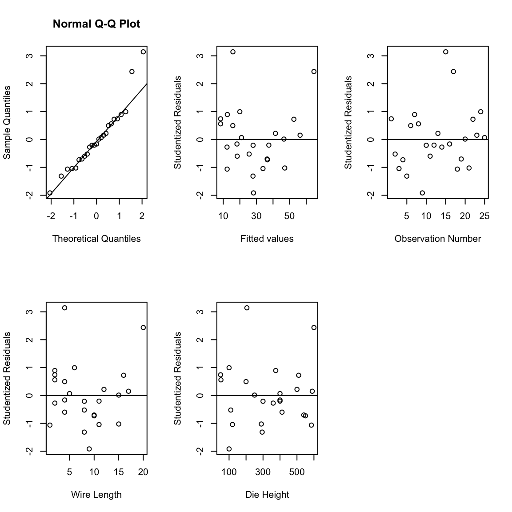
influence_df <- data.frame(dffits = dffits(fit),
cook.D = cooks.distance(fit),
dfbetas(fit))
influence_dfolsrr Package## install.packages("olsrr") # Run once if needed
library(olsrr)
ols_plot_cooksd_chart(fit)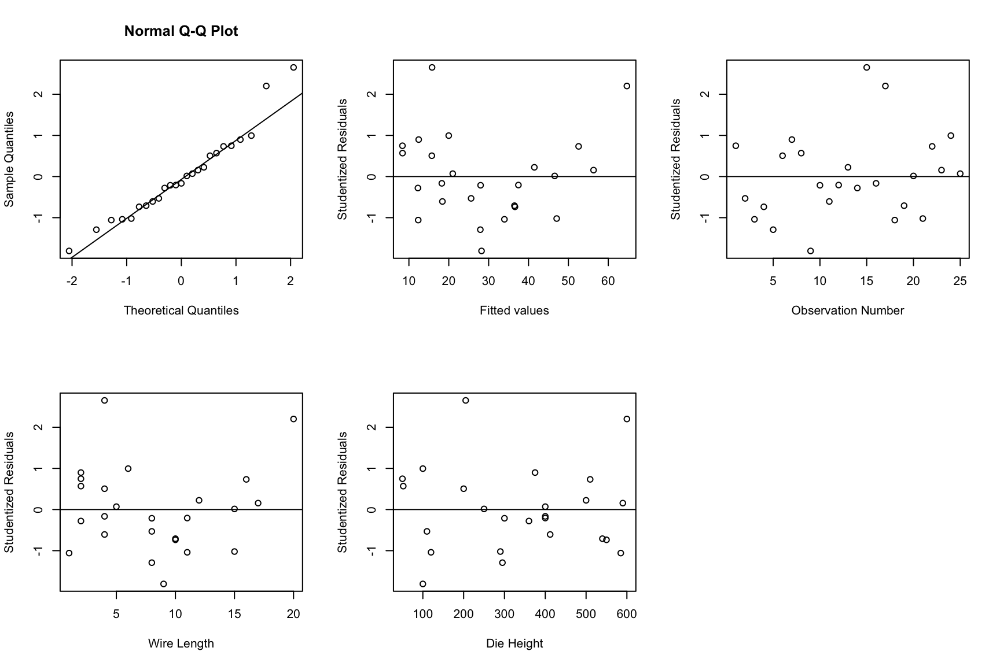
ols_plot_dffits(fit)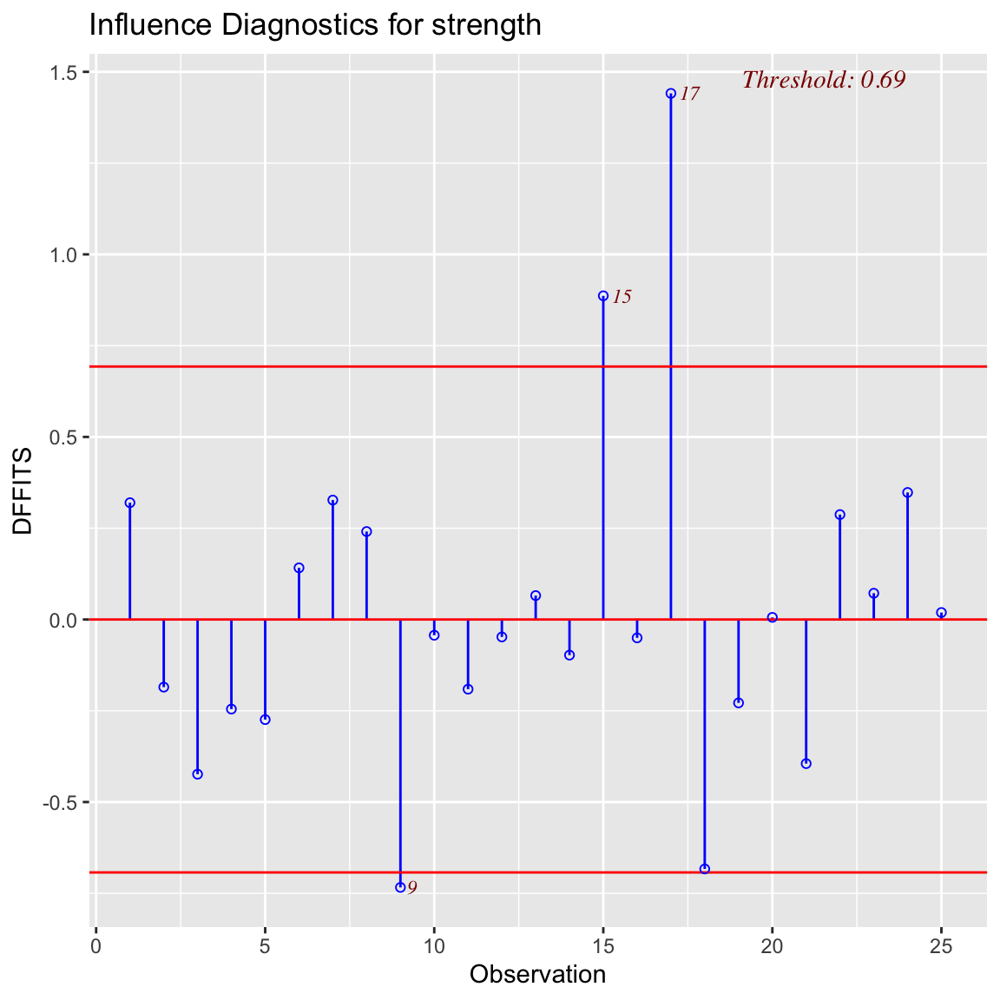
ols_plot_dfbetas(fit)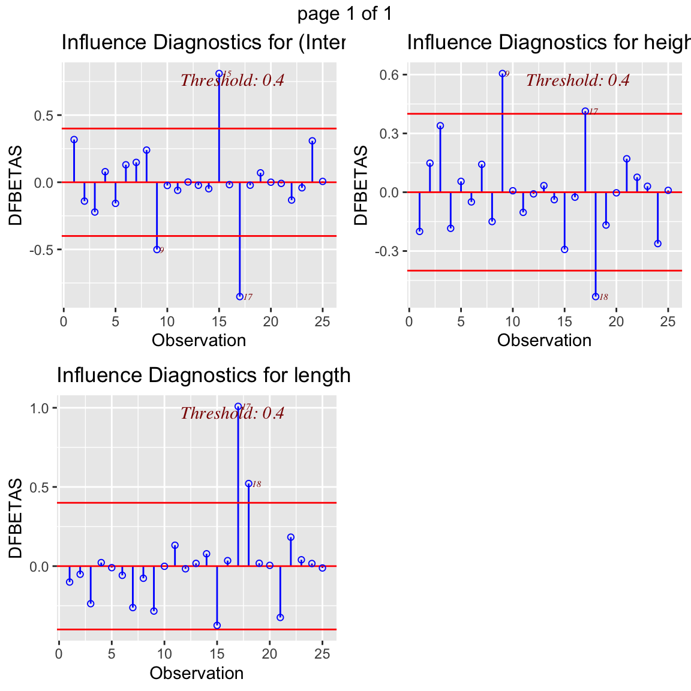
y <- c(1.81, 1.70, 1.65, 1.55, 1.48, 1.40, 1.30, 1.26, 1.24, 1.21, 1.20, 1.18)
x <- c(20, 25, 30, 35, 40, 50, 60, 65, 70, 75, 80, 90)
fit_poly <- lm(y ~ x + I(x^2))
summary(fit_poly)
Call:
lm(formula = y ~ x + I(x^2))
Residuals:
Min 1Q Median 3Q Max
-0.0174763 -0.0065087 0.0001297 0.0071482 0.0151887
Coefficients:
Estimate Std. Error t value Pr(>|t|)
(Intercept) 2.198e+00 2.255e-02 97.48 6.38e-15 ***
x -2.252e-02 9.424e-04 -23.90 1.88e-09 ***
I(x^2) 1.251e-04 8.658e-06 14.45 1.56e-07 ***
---
Signif. codes: 0 '***' 0.001 '**' 0.01 '*' 0.05 '.' 0.1 ' ' 1
Residual standard error: 0.01219 on 9 degrees of freedom
Multiple R-squared: 0.9975, Adjusted R-squared: 0.9969
F-statistic: 1767 on 2 and 9 DF, p-value: 2.096e-12plot(x, y, xlab = "Lot size, x", ylab = "Average cost per unit, y")
lines(x, predict(fit_poly, newdata = data.frame(x = x)), type = "l")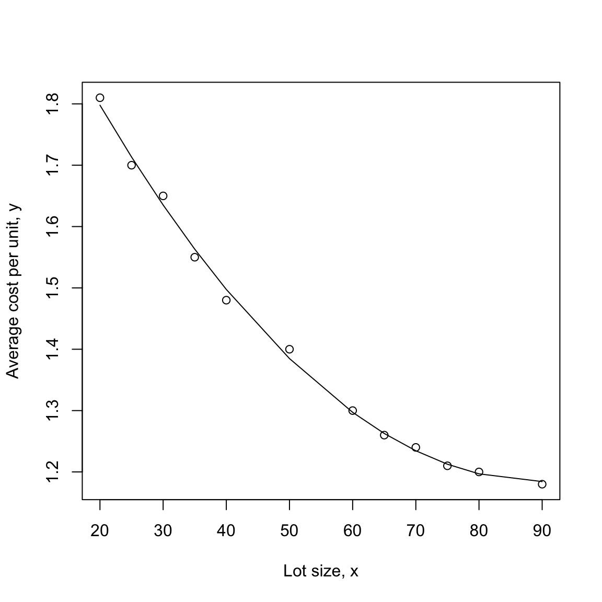
fit1 <- lm(y ~ x)
anova(fit1, fit_poly)Investigate the common observation that males tend to have higher blood pressure than females of similar age.
## Note: Update this path to your local file location
sbpdata <- read.csv("sbpdata.csv")
sbpdata## Ensure sex is a factor (labels will appear in the legend)
sbpdata$sex <- as.factor(sbpdata$sex)
## Fit (you already have this)
fit.age <- lm(sbp ~ age, data = sbpdata)
## Generate predictions over the observed age range
new_age <- seq(min(sbpdata$age, na.rm = TRUE),
max(sbpdata$age, na.rm = TRUE),
length.out = 200)
pred <- predict(fit.age, newdata = data.frame(age = new_age))
## Simple palette for the sex levels (works for 1–3 levels; expand if needed)
lev <- levels(sbpdata$sex)
cols <- setNames(c("steelblue3", "tomato3", "darkorchid3")[seq_along(lev)], lev)
## Scatter plot with colored points by sex
plot(sbp ~ age, data = sbpdata,
col = cols[sbpdata$sex], pch = 16,
xlab = "Age", ylab = "Systolic BP")
## Add predicted line
lines(new_age, pred, lwd = 2)
## Legend
legend("topleft", legend = lev, col = cols[lev], pch = 16, bty = "n", title = "Sex")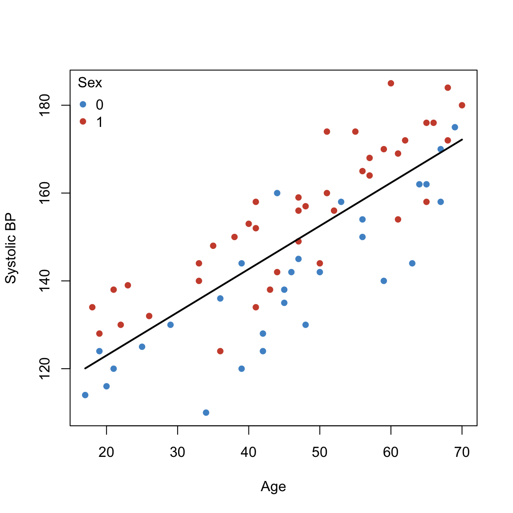
data.frame(model.matrix(fit.age)) print(anova(fit.age))Analysis of Variance Table
Response: sbp
Df Sum Sq Mean Sq F value Pr(>F)
age 1 14951.3 14951.3 121.27 < 2.2e-16 ***
Residuals 67 8260.5 123.3
---
Signif. codes: 0 '***' 0.001 '**' 0.01 '*' 0.05 '.' 0.1 ' ' 1## Parallelism: H0: beta3=0 (Sex has additive effect)
fit.agePLUSsex <- lm(sbp ~ age + sex, data = sbpdata)
## Ensure sex is a factor for labeling/colors
sbpdata$sex <- factor(sbpdata$sex)
## Fit (additive: parallelism)
fit.agePLUSsex <- lm(sbp ~ age + sex, data = sbpdata)
## X-range and palette
ages <- seq(min(sbpdata$age, na.rm = TRUE),
max(sbpdata$age, na.rm = TRUE),
length.out = 200)
lev <- levels(sbpdata$sex)
cols <- setNames(c("steelblue3", "tomato3", "darkorchid3")[seq_along(lev)], lev)
## Scatter with colored points by sex
plot(sbp ~ age, data = sbpdata,
col = cols[sbpdata$sex], pch = 16,
xlab = "Age", ylab = "Systolic BP")
## Parallel fitted lines: one per sex (same slope, different intercepts)
for (sx in lev) {
nd <- data.frame(age = ages, sex = factor(sx, levels = lev))
yhat <- predict(fit.agePLUSsex, newdata = nd)
lines(ages, yhat, col = cols[sx], lwd = 2)
}
## Legend
legend("topleft", legend = lev, col = cols[lev], pch = 16, lwd = 2, bty = "n", title = "Sex")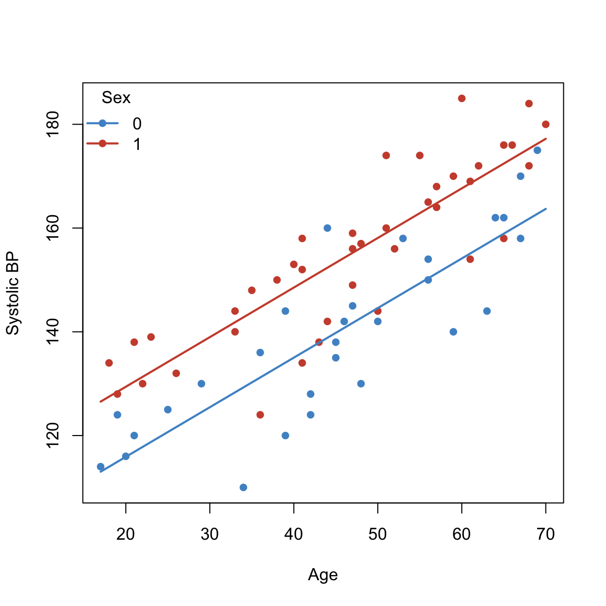
data.frame(model.matrix(fit.agePLUSsex))print(anova(fit.age, fit.agePLUSsex))Analysis of Variance Table
Model 1: sbp ~ age
Model 2: sbp ~ age + sex
Res.Df RSS Df Sum of Sq F Pr(>F)
1 67 8260.5
2 66 5202.0 1 3058.5 38.805 3.701e-08 ***
---
Signif. codes: 0 '***' 0.001 '**' 0.01 '*' 0.05 '.' 0.1 ' ' 1## Make sure sex is a factor (for colors/legend)
sbpdata$sex <- factor(sbpdata$sex)
## Fit (interaction: different slopes by sex)
fit.age.TIMES.sex <- lm(sbp ~ age + sex + age:sex, data = sbpdata)
## Age grid and palette
ages <- seq(min(sbpdata$age, na.rm = TRUE),
max(sbpdata$age, na.rm = TRUE),
length.out = 200)
lev <- levels(sbpdata$sex)
cols <- setNames(c("steelblue3", "tomato3", "darkorchid3")[seq_along(lev)], lev)
## Scatter: color points by sex
plot(sbp ~ age, data = sbpdata,
col = cols[sbpdata$sex], pch = 16,
xlab = "Age", ylab = "Systolic BP")
## Fitted lines: one per sex (different slopes allowed)
for (sx in lev) {
nd <- data.frame(age = ages, sex = factor(sx, levels = lev))
yhat <- predict(fit.age.TIMES.sex, newdata = nd)
lines(ages, yhat, col = cols[sx], lwd = 2)
}
## Legend
legend("topleft", legend = lev, col = cols[lev], pch = 16, lwd = 2, bty = "n", title = "Sex")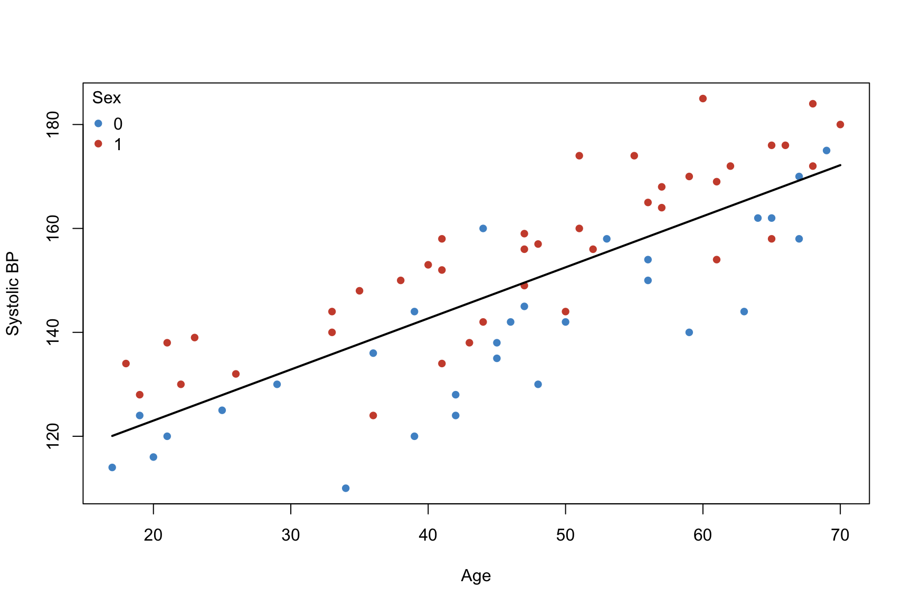
Model Matrix and ANOVA
data.frame(model.matrix(fit.age.TIMES.sex))summary(fit.age.TIMES.sex)
Call:
lm(formula = sbp ~ age + sex + age:sex, data = sbpdata)
Residuals:
Min 1Q Median 3Q Max
-20.647 -3.410 1.254 4.314 21.153
Coefficients:
Estimate Std. Error t value Pr(>|t|)
(Intercept) 97.07708 5.17046 18.775 < 2e-16 ***
age 0.94932 0.10864 8.738 1.43e-12 ***
sex1 12.96144 7.01172 1.849 0.0691 .
age:sex1 0.01203 0.14519 0.083 0.9342
---
Signif. codes: 0 '***' 0.001 '**' 0.01 '*' 0.05 '.' 0.1 ' ' 1
Residual standard error: 8.946 on 65 degrees of freedom
Multiple R-squared: 0.7759, Adjusted R-squared: 0.7656
F-statistic: 75.02 on 3 and 65 DF, p-value: < 2.2e-16print(anova(fit.age,fit.agePLUSsex,fit.age.TIMES.sex))Analysis of Variance Table
Model 1: sbp ~ age
Model 2: sbp ~ age + sex
Model 3: sbp ~ age + sex + age:sex
Res.Df RSS Df Sum of Sq F Pr(>F)
1 67 8260.5
2 66 5202.0 1 3058.52 38.2210 4.692e-08 ***
3 65 5201.4 1 0.55 0.0069 0.9342
---
Signif. codes: 0 '***' 0.001 '**' 0.01 '*' 0.05 '.' 0.1 ' ' 1## Make sure sex is a factor (for colors/legend)
sbpdata$sex <- factor(sbpdata$sex)
## Fit (interaction: different slopes by sex)
fit.equal.intercept <- lm(sbp ~ age + age:sex, data = sbpdata)
## Age grid and palette
ages <- seq(min(sbpdata$age, na.rm = TRUE),
max(sbpdata$age, na.rm = TRUE),
length.out = 200)
lev <- levels(sbpdata$sex)
cols <- setNames(c("steelblue3", "tomato3", "darkorchid3")[seq_along(lev)], lev)
## Scatter: color points by sex
plot(sbp ~ age, data = sbpdata,
col = cols[sbpdata$sex], pch = 16,
xlab = "Age", ylab = "Systolic BP")
## Fitted lines: one per sex (different slopes allowed)
for (sx in lev) {
nd <- data.frame(age = ages, sex = factor(sx, levels = lev))
yhat <- predict(fit.equal.intercept, newdata = nd)
lines(ages, yhat, col = cols[sx], lwd = 2)
}
## Legend
legend("topleft", legend = lev, col = cols[lev], pch = 16, lwd = 2, bty = "n", title = "Sex")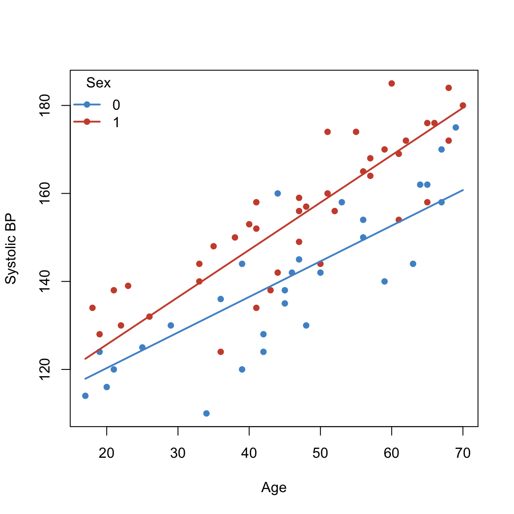
fit.int <- lm(sbp ~ 1, data = sbpdata)
fit.sex <- lm(sbp ~ sex, data = sbpdata)
print(anova(fit.int,fit.age,fit.agePLUSsex, fit.age.TIMES.sex))Analysis of Variance Table
Model 1: sbp ~ 1
Model 2: sbp ~ age
Model 3: sbp ~ age + sex
Model 4: sbp ~ age + sex + age:sex
Res.Df RSS Df Sum of Sq F Pr(>F)
1 68 23211.8
2 67 8260.5 1 14951.3 186.8390 < 2.2e-16 ***
3 66 5202.0 1 3058.5 38.2210 4.692e-08 ***
4 65 5201.4 1 0.5 0.0069 0.9342
---
Signif. codes: 0 '***' 0.001 '**' 0.01 '*' 0.05 '.' 0.1 ' ' 1print(anova(fit.int,fit.age,fit.equal.intercept, fit.age.TIMES.sex))Analysis of Variance Table
Model 1: sbp ~ 1
Model 2: sbp ~ age
Model 3: sbp ~ age + age:sex
Model 4: sbp ~ age + sex + age:sex
Res.Df RSS Df Sum of Sq F Pr(>F)
1 68 23211.8
2 67 8260.5 1 14951.3 186.8390 < 2.2e-16 ***
3 66 5474.9 1 2785.6 34.8107 1.437e-07 ***
4 65 5201.4 1 273.4 3.4171 0.06907 .
---
Signif. codes: 0 '***' 0.001 '**' 0.01 '*' 0.05 '.' 0.1 ' ' 1print(anova(fit.int,fit.sex,fit.agePLUSsex, fit.age.TIMES.sex))Analysis of Variance Table
Model 1: sbp ~ 1
Model 2: sbp ~ sex
Model 3: sbp ~ age + sex
Model 4: sbp ~ age + sex + age:sex
Res.Df RSS Df Sum of Sq F Pr(>F)
1 68 23211.8
2 67 19282.5 1 3929.2 49.1017 1.684e-09 ***
3 66 5202.0 1 14080.6 175.9583 < 2.2e-16 ***
4 65 5201.4 1 0.5 0.0069 0.9342
---
Signif. codes: 0 '***' 0.001 '**' 0.01 '*' 0.05 '.' 0.1 ' ' 1summary(fit.age)
Call:
lm(formula = sbp ~ age, data = sbpdata)
Residuals:
Min 1Q Median 3Q Max
-26.782 -7.632 1.968 8.201 22.651
Coefficients:
Estimate Std. Error t value Pr(>|t|)
(Intercept) 103.34905 4.33190 23.86 <2e-16 ***
age 0.98333 0.08929 11.01 <2e-16 ***
---
Signif. codes: 0 '***' 0.001 '**' 0.01 '*' 0.05 '.' 0.1 ' ' 1
Residual standard error: 11.1 on 67 degrees of freedom
Multiple R-squared: 0.6441, Adjusted R-squared: 0.6388
F-statistic: 121.3 on 1 and 67 DF, p-value: < 2.2e-16summary(fit.equal.intercept)
Call:
lm(formula = sbp ~ age + age:sex, data = sbpdata)
Residuals:
Min 1Q Median 3Q Max
-21.6338 -4.3067 0.9922 4.9819 20.2753
Coefficients:
Estimate Std. Error t value Pr(>|t|)
(Intercept) 104.12501 3.55578 29.283 < 2e-16 ***
age 0.80908 0.07918 10.219 3.14e-15 ***
age:sex1 0.26705 0.04608 5.795 2.09e-07 ***
---
Signif. codes: 0 '***' 0.001 '**' 0.01 '*' 0.05 '.' 0.1 ' ' 1
Residual standard error: 9.108 on 66 degrees of freedom
Multiple R-squared: 0.7641, Adjusted R-squared: 0.757
F-statistic: 106.9 on 2 and 66 DF, p-value: < 2.2e-16summary(fit.agePLUSsex)
Call:
lm(formula = sbp ~ age + sex, data = sbpdata)
Residuals:
Min 1Q Median 3Q Max
-20.705 -3.299 1.248 4.325 21.160
Coefficients:
Estimate Std. Error t value Pr(>|t|)
(Intercept) 96.77353 3.62085 26.727 < 2e-16 ***
age 0.95606 0.07153 13.366 < 2e-16 ***
sex1 13.51345 2.16932 6.229 3.7e-08 ***
---
Signif. codes: 0 '***' 0.001 '**' 0.01 '*' 0.05 '.' 0.1 ' ' 1
Residual standard error: 8.878 on 66 degrees of freedom
Multiple R-squared: 0.7759, Adjusted R-squared: 0.7691
F-statistic: 114.2 on 2 and 66 DF, p-value: < 2.2e-16summary(fit.age.TIMES.sex)
Call:
lm(formula = sbp ~ age + sex + age:sex, data = sbpdata)
Residuals:
Min 1Q Median 3Q Max
-20.647 -3.410 1.254 4.314 21.153
Coefficients:
Estimate Std. Error t value Pr(>|t|)
(Intercept) 97.07708 5.17046 18.775 < 2e-16 ***
age 0.94932 0.10864 8.738 1.43e-12 ***
sex1 12.96144 7.01172 1.849 0.0691 .
age:sex1 0.01203 0.14519 0.083 0.9342
---
Signif. codes: 0 '***' 0.001 '**' 0.01 '*' 0.05 '.' 0.1 ' ' 1
Residual standard error: 8.946 on 65 degrees of freedom
Multiple R-squared: 0.7759, Adjusted R-squared: 0.7656
F-statistic: 75.02 on 3 and 65 DF, p-value: < 2.2e-16library(olsrr)
## Note: Update this path to your local file location
wine <- read.csv("wine.csv")
model.wine <- lm(quality ~ ., data = wine)ols_step_best_subset(model.wine) Best Subsets Regression
-------------------------------------------------
Model Index Predictors
-------------------------------------------------
1 flavor
2 flavor oakiness
3 aroma flavor oakiness
4 clarity aroma flavor oakiness
5 clarity aroma body flavor oakiness
-------------------------------------------------
Subsets Regression Summary
-------------------------------------------------------------------------------------------------------------------------------
Adj. Pred
Model R-Square R-Square R-Square C(p) AIC SBIC SBC MSEP FPE HSP APC
-------------------------------------------------------------------------------------------------------------------------------
1 0.6242 0.6137 0.5868 9.0436 130.0214 21.6859 134.9341 61.4102 1.7010 0.0462 0.4176
2 0.6611 0.6417 0.6058 6.8132 128.0901 20.1242 134.6404 57.0033 1.6171 0.0441 0.3970
3 0.7038 0.6776 0.6379 3.9278 124.9781 18.0702 133.1661 51.3383 1.4906 0.0409 0.3659
4 0.7147 0.6801 0.6102 4.6747 125.5480 19.2854 135.3736 50.9872 1.5143 0.0418 0.3717
5 0.7206 0.6769 0.587 6.0000 126.7552 21.0956 138.2183 51.5452 1.5649 0.0436 0.3842
-------------------------------------------------------------------------------------------------------------------------------
AIC: Akaike Information Criteria
SBIC: Sawa's Bayesian Information Criteria
SBC: Schwarz Bayesian Criteria
MSEP: Estimated error of prediction, assuming multivariate normality
FPE: Final Prediction Error
HSP: Hocking's Sp
APC: Amemiya Prediction Criteria ## Backward Elimination (alpha_out = 0.1)
ols_step_backward_p(model.wine, p_val = 0.1)
Stepwise Summary
------------------------------------------------------------------------
Step Variable AIC SBC SBIC R2 Adj. R2
------------------------------------------------------------------------
0 Full Model 126.755 138.218 21.096 0.72060 0.67694
1 body 125.548 135.374 19.285 0.71471 0.68013
2 clarity 124.978 133.166 18.070 0.70377 0.67763
------------------------------------------------------------------------
Final Model Output
------------------
Model Summary
---------------------------------------------------------------
R 0.839 RMSE 1.098
R-Squared 0.704 MSE 1.207
Adj. R-Squared 0.678 Coef. Var 9.338
Pred R-Squared 0.638 AIC 124.978
MAE 0.868 SBC 133.166
---------------------------------------------------------------
RMSE: Root Mean Square Error
MSE: Mean Square Error
MAE: Mean Absolute Error
AIC: Akaike Information Criteria
SBC: Schwarz Bayesian Criteria
ANOVA
-------------------------------------------------------------------
Sum of
Squares DF Mean Square F Sig.
-------------------------------------------------------------------
Regression 108.935 3 36.312 26.925 0.0000
Residual 45.853 34 1.349
Total 154.788 37
-------------------------------------------------------------------
Parameter Estimates
----------------------------------------------------------------------------------------
model Beta Std. Error Std. Beta t Sig lower upper
----------------------------------------------------------------------------------------
(Intercept) 6.467 1.333 4.852 0.000 3.759 9.176
aroma 0.580 0.262 0.307 2.213 0.034 0.047 1.113
flavor 1.200 0.275 0.603 4.364 0.000 0.641 1.758
oakiness -0.602 0.264 -0.217 -2.278 0.029 -1.140 -0.065
----------------------------------------------------------------------------------------## Forward Selection (alpha_in = 0.1)
ols_step_forward_p(model.wine, p_val = 0.1)
Stepwise Summary
------------------------------------------------------------------------
Step Variable AIC SBC SBIC R2 Adj. R2
------------------------------------------------------------------------
0 Base Model 165.209 168.484 55.141 0.00000 0.00000
1 flavor 130.021 134.934 21.686 0.62417 0.61373
2 oakiness 128.090 134.640 20.124 0.66111 0.64175
3 aroma 124.978 133.166 18.070 0.70377 0.67763
------------------------------------------------------------------------
Final Model Output
------------------
Model Summary
---------------------------------------------------------------
R 0.839 RMSE 1.098
R-Squared 0.704 MSE 1.207
Adj. R-Squared 0.678 Coef. Var 9.338
Pred R-Squared 0.638 AIC 124.978
MAE 0.868 SBC 133.166
---------------------------------------------------------------
RMSE: Root Mean Square Error
MSE: Mean Square Error
MAE: Mean Absolute Error
AIC: Akaike Information Criteria
SBC: Schwarz Bayesian Criteria
ANOVA
-------------------------------------------------------------------
Sum of
Squares DF Mean Square F Sig.
-------------------------------------------------------------------
Regression 108.935 3 36.312 26.925 0.0000
Residual 45.853 34 1.349
Total 154.788 37
-------------------------------------------------------------------
Parameter Estimates
----------------------------------------------------------------------------------------
model Beta Std. Error Std. Beta t Sig lower upper
----------------------------------------------------------------------------------------
(Intercept) 6.467 1.333 4.852 0.000 3.759 9.176
flavor 1.200 0.275 0.603 4.364 0.000 0.641 1.758
oakiness -0.602 0.264 -0.217 -2.278 0.029 -1.140 -0.065
aroma 0.580 0.262 0.307 2.213 0.034 0.047 1.113
----------------------------------------------------------------------------------------## Stepwise Regression (alpha_in = 0.1, alpha_out = 0.1)
ols_step_both_p(model.wine, p_enter = 0.1, p_remove = 0.1)
Stepwise Summary
--------------------------------------------------------------------------
Step Variable AIC SBC SBIC R2 Adj. R2
--------------------------------------------------------------------------
0 Base Model 165.209 168.484 55.141 0.00000 0.00000
1 flavor (+) 130.021 134.934 21.686 0.62417 0.61373
2 oakiness (+) 128.090 134.640 20.124 0.66111 0.64175
3 aroma (+) 124.978 133.166 18.070 0.70377 0.67763
--------------------------------------------------------------------------
Final Model Output
------------------
Model Summary
---------------------------------------------------------------
R 0.839 RMSE 1.098
R-Squared 0.704 MSE 1.207
Adj. R-Squared 0.678 Coef. Var 9.338
Pred R-Squared 0.638 AIC 124.978
MAE 0.868 SBC 133.166
---------------------------------------------------------------
RMSE: Root Mean Square Error
MSE: Mean Square Error
MAE: Mean Absolute Error
AIC: Akaike Information Criteria
SBC: Schwarz Bayesian Criteria
ANOVA
-------------------------------------------------------------------
Sum of
Squares DF Mean Square F Sig.
-------------------------------------------------------------------
Regression 108.935 3 36.312 26.925 0.0000
Residual 45.853 34 1.349
Total 154.788 37
-------------------------------------------------------------------
Parameter Estimates
----------------------------------------------------------------------------------------
model Beta Std. Error Std. Beta t Sig lower upper
----------------------------------------------------------------------------------------
(Intercept) 6.467 1.333 4.852 0.000 3.759 9.176
flavor 1.200 0.275 0.603 4.364 0.000 0.641 1.758
oakiness -0.602 0.264 -0.217 -2.278 0.029 -1.140 -0.065
aroma 0.580 0.262 0.307 2.213 0.034 0.047 1.113
----------------------------------------------------------------------------------------y <- c(19, 20, 37, 39, 36, 38)
x1 <- c(4, 4, 7, 7, 7.1, 7.1)
x2 <- c(16, 16, 49, 49, 50.4, 50.4)
cor(data.frame(x1, x2)) x1 x2
x1 1.0000000 0.9999713
x2 0.9999713 1.0000000fit_multi <- lm(y ~ x1 + x2)
summary(fit_multi)
Call:
lm(formula = y ~ x1 + x2)
Residuals:
1 2 3 4 5 6
-0.5 0.5 -1.0 1.0 -1.0 1.0
Coefficients:
Estimate Std. Error t value Pr(>|t|)
(Intercept) -156.056 117.158 -1.332 0.275
x1 65.444 45.890 1.426 0.249
x2 -5.389 4.152 -1.298 0.285
Residual standard error: 1.225 on 3 degrees of freedom
Multiple R-squared: 0.9897, Adjusted R-squared: 0.9829
F-statistic: 144.3 on 2 and 3 DF, p-value: 0.001043fit1_multi <- lm(y ~ x1)
summary(fit1_multi)
Call:
lm(formula = y ~ x1)
Residuals:
1 2 3 4 5 6
-0.5260 0.4740 -0.1925 1.8075 -1.7814 0.2186
Coefficients:
Estimate Std. Error t value Pr(>|t|)
(Intercept) -4.0293 2.3332 -1.727 0.159
x1 5.8888 0.3762 15.654 9.73e-05 ***
---
Signif. codes: 0 '***' 0.001 '**' 0.01 '*' 0.05 '.' 0.1 ' ' 1
Residual standard error: 1.325 on 4 degrees of freedom
Multiple R-squared: 0.9839, Adjusted R-squared: 0.9799
F-statistic: 245.1 on 1 and 4 DF, p-value: 9.725e-05ols_vif_tol(fit_multi)wine.x <- wine[, -ncol(wine)] # Assuming quality is the last column
cor(wine.x) clarity aroma body flavor oakiness
clarity 1.00000000 0.0619021 -0.3083783 -0.08515993 0.1832147
aroma 0.06190210 1.0000000 0.5489102 0.73656121 0.2016444
body -0.30837826 0.5489102 1.0000000 0.64665917 0.1521059
flavor -0.08515993 0.7365612 0.6466592 1.00000000 0.1797605
oakiness 0.18321471 0.2016444 0.1521059 0.17976051 1.0000000## VIF using olsrr (data frame output)
ols_vif_tol(model.wine)## Data: Weight, height and age of children
wgt <- c(64, 71, 53, 67, 55, 58, 77, 57, 56, 51, 76, 68)
hgt <- c(57, 59, 49, 62, 51, 50, 55, 48, 42, 42, 61, 57)
age <- c(8, 10, 6, 11, 8, 7, 10, 9, 10, 6, 12, 9)
fit_age_hgt <- lm(wgt ~ hgt + age, data = child.data)
ols_vif_tol(fit_age_hgt)